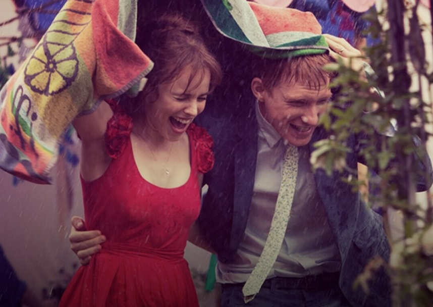

We're all traveling through time together, every day of our lives. All we can do is do our best to relish this remarkable ride.
I always knew we were a fairly odd family. First there was me. Too tall. Too skinny. Too orange. My mum was lovely, but not like other mums. There was something solid about her. Something rectangular, busy and unsentimental. Her fashion icon was the Queen. Dad, well, he was more normal. He always seemed to have time on his hands. After giving up teaching university students on his 50th birthday, he was eternally available for a leisurely chat or to let me win at table tennis. Yes. And then there was Mum's brother, Uncle Desmond. Always impeccably dressed. He spent the days just, well, being Uncle Desmond. He was the most charming and least clever man you could ever meet. His mind was on other things, though we never found out what. And then, finally there was Catherine. Katie. Kit Kat. My sister. In a household of sensible jackets and haircuts there was this, well, what can I call her, nature thing. With her elfin eyes, her purple T-shirts and her eternally bare feet, she was then, and still is to me, about the most wonderful thing in the world.